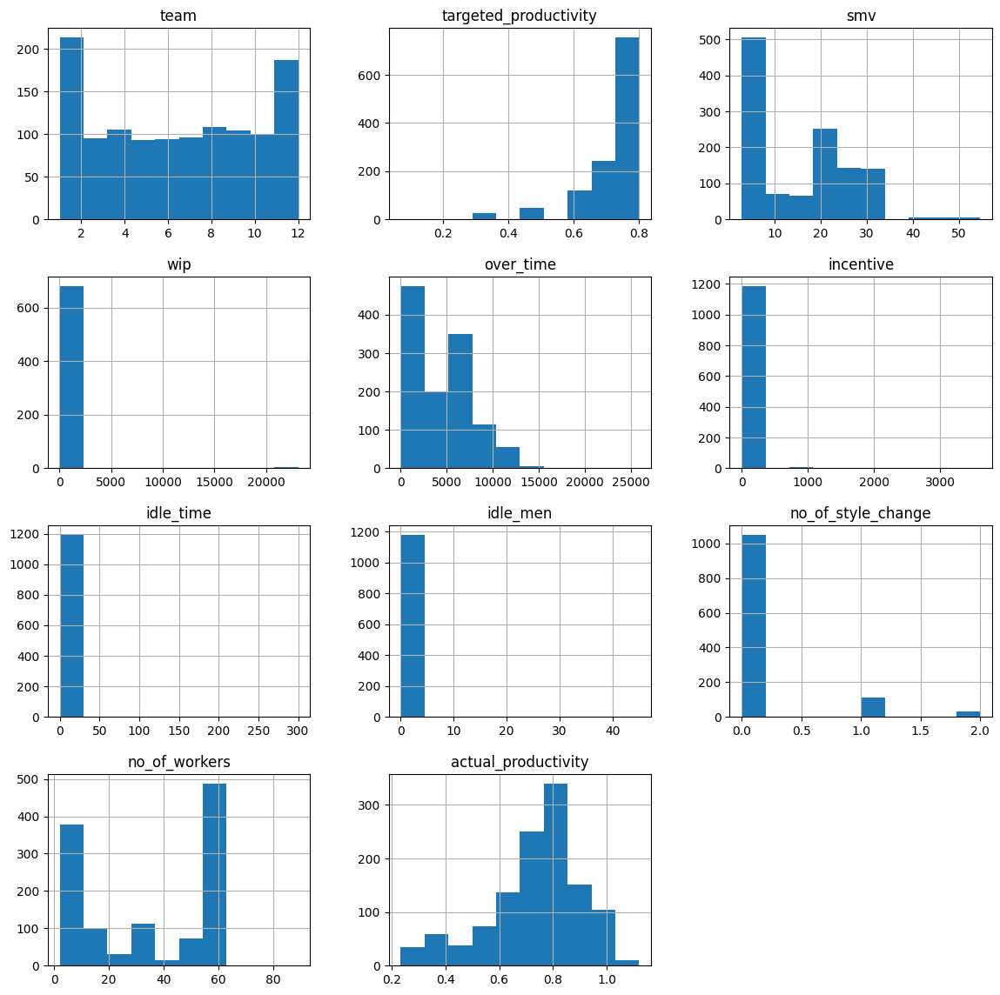
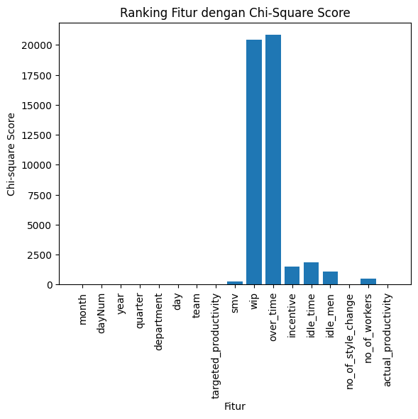
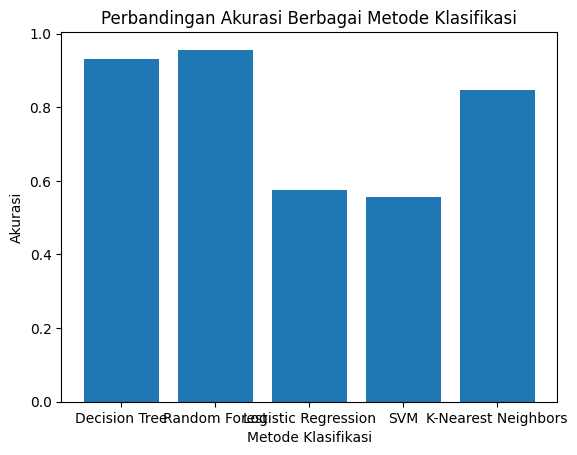

from google.colab import drive
drive.mount('/content/drive')
%cd /content/drive/MyDrive/PSD_SMSTR_5/Project2-1/laporanMounted at /content/drive
/content/drive/MyDrive/PSD_SMSTR_5/Project2-1/laporanfrom google.colab import drive
drive.mount('/content/drive')
%cd /content/drive/MyDrive/PSD_SMSTR_5/Project2-1/laporanMounted at /content/drive
/content/drive/MyDrive/PSD_SMSTR_5/Project2-1/laporanimport pandas as pd
import numpy as np
from scipy import stats
from IPython.display import display, Math
from sympy import symbols, Eq
from sklearn.preprocessing import LabelEncoder
from sklearn.feature_selection import SelectKBest
from sklearn.feature_selection import chi2
import matplotlib.pyplot as plt
from sklearn.utils import resample
from sklearn.preprocessing import MinMaxScaler
import pickle
from sklearn.metrics import accuracy_score, recall_score, precision_score, f1_score, classification_report
from sklearn.model_selection import train_test_split
from sklearn.metrics import accuracy_score
from sklearn.tree import DecisionTreeClassifier
from sklearn.ensemble import RandomForestClassifier
from sklearn.linear_model import LogisticRegression
from sklearn.svm import SVC
from sklearn.neighbors import KNeighborsClassifierdf_review = pd.read_csv ('garmen.csv')
df_review.head()| date | quarter | department | day | team | targeted_productivity | smv | wip | over_time | incentive | idle_time | idle_men | no_of_style_change | no_of_workers | actual_productivity | Label | |
|---|---|---|---|---|---|---|---|---|---|---|---|---|---|---|---|---|
| 0 | 1/1/2015 | Quarter1 | sweing | Thursday | 8 | 0.80 | 26.16 | 1108.0 | 7080 | 98 | 0.0 | 0 | 0 | 59.0 | 0.940725 | High |
| 1 | 1/1/2015 | Quarter1 | finishing | Thursday | 1 | 0.75 | 3.94 | NaN | 960 | 0 | 0.0 | 0 | 0 | 8.0 | 0.886500 | High |
| 2 | 1/1/2015 | Quarter1 | sweing | Thursday | 11 | 0.80 | 11.41 | 968.0 | 3660 | 50 | 0.0 | 0 | 0 | 30.5 | 0.800570 | High |
| 3 | 1/1/2015 | Quarter1 | sweing | Thursday | 12 | 0.80 | 11.41 | 968.0 | 3660 | 50 | 0.0 | 0 | 0 | 30.5 | 0.800570 | High |
| 4 | 1/1/2015 | Quarter1 | sweing | Thursday | 6 | 0.80 | 25.90 | 1170.0 | 1920 | 50 | 0.0 | 0 | 0 | 56.0 | 0.800382 | High |
Memprediksi atau mengukur produktivitas karyawan di industri garmen dengan menggunakan model prediksi. Tingkat produktivitas karyawan atau tim pada suatu hari atau periode tertentu dapat diperkirakan sebagai berikut:
Tujuan lainnya adalah mengidentifikasi faktor-faktor yang paling memengaruhi produktivitas karyawan. Ini dapat mencakup variabel seperti jumlah pekerja, waktu kerja tambahan (overtime), insentif, dan lainnya.
Studi ini akan membahas produktivitas karyawan di industri garmen. Data dikumpulkan dari berbagai perusahaan garmen dan mencakup berbagai aspek seperti jumlah pekerja, waktu kerja tambahan (overtime), insentif, dan lainnya. Setiap entri menunjukkan tingkat produktivitas pada hari tertentu dan database akhir diekspor ke dalam satu lembar (.csv).
Jumlah Dataset sebanyak 1197 dengan rincian sebagai berikut: - Produktivitas tinggi (“High”) = 798 data - Produktivitas sedang (“Medium”) = 266 data - Produktivitas rendah (“Low”) = 133 data
Pertanyaan yang perlu diteliti lebih lanjut meliputi: - Apakah terdapat Missing Values pada data? - Apakah terdapat Outlier pada data? - Apakah proporsi dari setiap kelas pada data sudah seimbang atau inbalancing?
df_review.info()<class 'pandas.core.frame.DataFrame'>
RangeIndex: 1197 entries, 0 to 1196
Data columns (total 16 columns):
# Column Non-Null Count Dtype
--- ------ -------------- -----
0 date 1197 non-null object
1 quarter 1197 non-null object
2 department 1197 non-null object
3 day 1197 non-null object
4 team 1197 non-null int64
5 targeted_productivity 1197 non-null float64
6 smv 1197 non-null float64
7 wip 691 non-null float64
8 over_time 1197 non-null int64
9 incentive 1197 non-null int64
10 idle_time 1197 non-null float64
11 idle_men 1197 non-null int64
12 no_of_style_change 1197 non-null int64
13 no_of_workers 1197 non-null float64
14 actual_productivity 1197 non-null float64
15 Label 1197 non-null object
dtypes: float64(6), int64(5), object(5)
memory usage: 149.8+ KBdf_review.columnsIndex(['date', 'quarter', 'department', 'day', 'team', 'targeted_productivity',
'smv', 'wip', 'over_time', 'incentive', 'idle_time', 'idle_men',
'no_of_style_change', 'no_of_workers', 'actual_productivity', 'Label'],
dtype='object')Terdapat beberapa Tipe Data yang terdapat didalam dataset, diantaranya - Tipe Data Rasio
- date
- quarter
- team_no
- no_of_workers
- no_of_style_change
- targeted_productivity
- smv
- wip
- over_time
- incentive
- idle_time
- idle_men
Banyak data dalam masing-masing kelasnya
df_review['actual_productivity'].unique()array([0.94072542, 0.8865 , 0.80057049, 0.80038194, 0.800125 ,
0.75516667, 0.75368348, 0.75309753, 0.75042783, 0.72112696,
0.71220525, 0.7070459 , 0.70591667, 0.67666667, 0.59305556,
0.54072917, 0.52118 , 0.43632639, 0.98802469, 0.98788044,
0.95627083, 0.94527778, 0.90291667, 0.80072531, 0.80032294,
0.80031864, 0.80023729, 0.80014865, 0.78729969, 0.78244792,
0.75024303, 0.7018125 , 0.70013404, 0.69996522, 0.62833333,
0.6253125 , 0.99138889, 0.93164583, 0.91522917, 0.87971448,
0.86167901, 0.85056949, 0.85043644, 0.85034513, 0.80059806,
0.80023784, 0.8000302 , 0.79210417, 0.75922839, 0.75034846,
0.68270833, 0.66760417, 0.60343218, 0.34583333, 0.96105903,
0.93951389, 0.89366319, 0.87539062, 0.82083333, 0.80441667,
0.80068437, 0.80025096, 0.80024601, 0.80007652, 0.763375 ,
0.75927083, 0.7504 , 0.66458333, 0.60002874, 0.96678135,
0.93649621, 0.89916667, 0.88868687, 0.85814394, 0.85050231,
0.80964015, 0.80590909, 0.80059447, 0.80027383, 0.80014097,
0.80012872, 0.80007657, 0.75054546, 0.75005785, 0.68106061,
0.64998328, 0.61625 , 0.95142046, 0.8805303 , 0.85013677,
0.83 , 0.82718654, 0.81337121, 0.80464015, 0.80034377,
0.80024675, 0.8 , 0.70048083, 0.66651515, 0.41211983,
0.33011364, 0.94768939, 0.9199054 , 0.90021572, 0.89172348,
0.85018182, 0.83575758, 0.82135417, 0.80049725, 0.80010714,
0.80002493, 0.77979167, 0.73598485, 0.71262626, 0.51560606,
0.34995139, 0.23370548, 0.985 , 0.93034038, 0.91158974,
0.85117411, 0.84695076, 0.81742424, 0.81710227, 0.80102821,
0.80034644, 0.8001171 , 0.75009835, 0.67324528, 0.67007576,
0.62888258, 0.38800781, 0.33797349, 0.93532197, 0.92564394,
0.87306818, 0.82829546, 0.69018282, 0.66808712, 0.65359848,
0.60913826, 0.60022985, 0.59734849, 0.59043561, 0.4731348 ,
0.45297963, 0.95515151, 0.9422138 , 0.90545454, 0.85052217,
0.80956439, 0.80018182, 0.725 , 0.68855756, 0.65004078,
0.64998056, 0.64810606, 0.64057765, 0.35063299, 0.24625 ,
0.9520202 , 0.91276667, 0.90126263, 0.85025253, 0.70557658,
0.60127841, 0.58230103, 0.52681035, 0.5003808 , 0.35020649,
0.93460744, 0.90808081, 0.90014481, 0.86458333, 0.8375947 ,
0.80031343, 0.70009556, 0.66732954, 0.60036969, 0.49998033,
0.35003125, 0.33235931, 0.31120746, 0.24731602, 0.98863636,
0.95311005, 0.88426136, 0.86065341, 0.85041563, 0.80003139,
0.70006035, 0.68929924, 0.66068329, 0.65013095, 0.60691288,
0.60029177, 0.50002507, 0.49999889, 0.98719697, 0.98090909,
0.97462121, 0.82680303, 0.77011398, 0.7005417 , 0.67556818,
0.66183712, 0.65019865, 0.60027327, 0.46575758, 0.45201254,
0.31385281, 0.85279356, 0.83838384, 0.80484848, 0.80001501,
0.70009416, 0.69204546, 0.66225589, 0.65041673, 0.65029958,
0.6502435 , 0.63986742, 0.6000627 , 0.58204546, 0.40324216,
0.23579545, 0.97727273, 0.96410606, 0.95890151, 0.80035877,
0.8001626 , 0.7938447 , 0.75051756, 0.75006805, 0.75006275,
0.75005736, 0.70017039, 0.68380682, 0.65006644, 0.57646039,
0.54996943, 0.53839962, 0.40954546, 0.35021836, 1.03357008,
0.80026149, 0.75003797, 0.7500319 , 0.72830303, 0.7000638 ,
0.50029042, 0.40033279, 0.36266667, 0.97852564, 0.91220211,
0.90055628, 0.85041051, 0.82714744, 0.80043654, 0.80041574,
0.80002056, 0.75817308, 0.75034483, 0.70002977, 0.60017284,
0.59487179, 0.52023765, 0.5051282 , 0.50024134, 0.47076923,
0.95763889, 0.94070106, 0.84998377, 0.80030279, 0.80019199,
0.75016237, 0.74290124, 0.70025078, 0.67021605, 0.64966222,
0.62682292, 0.60043643, 0.60041361, 0.55550013, 0.50054754,
0.4605787 , 0.39774306, 0.32740741, 0.96666667, 0.93724242,
0.91052189, 0.90064806, 0.90032111, 0.89602273, 0.89545454,
0.87058081, 0.85858586, 0.80064381, 0.80062987, 0.80053714,
0.80035194, 0.75007932, 0.7500412 , 0.65151515, 0.60012522,
0.57831439, 0.34998951, 0.26117424, 0.97379679, 0.97007576,
0.96178451, 0.85022378, 0.80090961, 0.80051331, 0.80038636,
0.74918831, 0.70043672, 0.65040752, 0.61818182, 0.59114168,
0.50006192, 0.32954545, 1.05962121, 0.99779221, 0.96369949,
0.95919192, 0.91037879, 0.85031268, 0.80003402, 0.80002351,
0.76929293, 0.75003145, 0.70061442, 0.64630682, 0.60014336,
0.35006699, 1.00023041, 0.97952778, 0.940625 , 0.92638889,
0.90012976, 0.861875 , 0.84545833, 0.82355556, 0.80354167,
0.80026322, 0.788 , 0.77815 , 0.70038621, 0.70016471,
0.65030714, 0.62282812, 0.6225 , 0.50003535, 0.37046657,
0.97755556, 0.9456 , 0.90222222, 0.85053214, 0.85036207,
0.84053333, 0.80053448, 0.80048968, 0.75555556, 0.7505931 ,
0.75028333, 0.72263889, 0.55333333, 0.50056731, 0.46769327,
0.43799534, 0.40635417, 0.28533333, 0.259375 , 0.989 ,
0.95018596, 0.9008 , 0.899 , 0.87755208, 0.85695 ,
0.85366667, 0.85017011, 0.80047373, 0.77333333, 0.75064667,
0.63466667, 0.60059761, 0.50011768, 0.4925 , 0.48792 ,
1.00045747, 0.97186667, 0.9202369 , 0.90053707, 0.85061053,
0.65676374, 0.65014815, 0.60071061, 0.38883036, 0.28698457,
1.0115625 , 1.0006713 , 1.00040205, 0.9504386 , 0.89219444,
0.85011396, 0.84506944, 0.75045066, 0.70266667, 0.70050893,
0.65100707, 0.46682121, 0.41155357, 0.31416667, 1.00060228,
0.99427083, 0.9001584 , 0.90014152, 0.80923611, 0.80040196,
0.80039322, 0.79996322, 0.74044444, 0.70039815, 0.70035455,
0.56197917, 0.50459649, 0.50080172, 0.29530774, 0.28033333,
0.26097879, 1.00141667, 1.00001855, 0.99999524, 0.99485 ,
0.97697917, 0.94998161, 0.91995454, 0.80043462, 0.80025902,
0.77822222, 0.70051357, 0.70018458, 0.58646546, 0.54151786,
0.5375 , 0.49541667, 0.41517241, 1.05028058, 0.96675926,
0.92918333, 0.91576667, 0.90014725, 0.70071042, 0.70061207,
0.70027885, 0.70013509, 0.68755556, 0.65083481, 0.53166667,
0.35070642, 1.00044602, 0.99992424, 0.9425 , 0.90666667,
0.8471 , 0.80061268, 0.77158333, 0.70007903, 0.56221264,
0.52284483, 0.50072013, 0.49654971, 1.05066667, 0.90013569,
0.89911111, 0.87008333, 0.84583333, 0.75052012, 0.75002778,
0.71576667, 0.66227011, 0.60022419, 0.54565767, 0.44791667,
0.36531871, 0.92868056, 0.89306667, 0.89155556, 0.87555556,
0.84088889, 0.80035521, 0.75065101, 0.70061823, 0.61020833,
0.60741667, 0.56825959, 0.35553448, 0.35325965, 1.05796296,
0.96201667, 0.90050904, 0.90047782, 0.888125 , 0.80016117,
0.79000324, 0.75064815, 0.70711111, 0.69770833, 0.61251716,
0.35030172, 0.272 , 1.00488889, 0.90063244, 0.90047076,
0.89998406, 0.8008 , 0.79675556, 0.75079701, 0.75035613,
0.70377083, 0.6895 , 0.39354885, 1.03315556, 1.02 ,
1.00034493, 1.00006579, 0.994375 , 0.91203704, 0.87 ,
0.85036458, 0.80094747, 0.80014414, 0.75040623, 0.71441049,
0.70058841, 0.61836111, 0.60007051, 0.54175 , 0.53690175,
0.50790323, 1.10048392, 1.09663333, 0.83866667, 0.75548611,
0.75079944, 0.68801768, 0.664875 , 0.65666667, 0.63771186,
0.60194444, 0.58 , 0.53567797, 0.50012336, 0.49788506,
0.46340395, 0.441392 , 0.92927778, 0.80088889, 0.80037492,
0.79620833, 0.75039216, 0.725625 , 0.70020613, 0.602 ,
0.60044751, 0.55725245, 0.48333333, 0.23804167, 1.1204375 ,
1.108125 , 0.87644444, 0.80080631, 0.76083333, 0.72256863,
0.71533333, 0.70063277, 0.7005731 , 0.68159804, 0.65022372,
0.60520833, 0.60416667, 0.59862745, 0.47571839, 0.4321229 ,
0.28704167, 0.28305449, 0.96043333, 0.80224332, 0.80098039,
0.80031237, 0.72233333, 0.70045989, 0.62941667, 0.62197175,
0.56597222, 0.35542803, 0.32996488, 0.258 , 0.92754167,
0.91375 , 0.9025 , 0.7866 , 0.75062135, 0.74916667,
0.7008882 , 0.70061403, 0.70060345, 0.65343137, 0.650134 ,
0.60098291, 0.58604167, 0.5814 , 0.36107143, 0.30211735,
0.9918 , 0.93686111, 0.919125 , 0.8211125 , 0.80027969,
0.75053268, 0.73464583, 0.70009573, 0.671875 , 0.64025 ,
0.54979167, 0.32813158, 0.30357447, 0.2565 , 0.25139925,
0.81640625, 0.80071149, 0.80047051, 0.80009402, 0.79998285,
0.7858642 , 0.73327778, 0.710125 , 0.70054044, 0.7 ,
0.68402778, 0.67213542, 0.63861438, 0.63135417, 0.61114054,
0.60958333, 0.58531579, 0.24941667, 0.8721 , 0.8319375 ,
0.8300625 , 0.80555556, 0.80000295, 0.78375 , 0.753525 ,
0.72734954, 0.70060526, 0.6721408 , 0.62701118, 0.62657778,
0.456875 , 0.38579167, 0.30750146, 0.28395833, 0.95579167,
0.93041667, 0.87115 , 0.80013725, 0.75077012, 0.75029394,
0.700623 , 0.70036207, 0.60128 , 0.41791667, 0.3715625 ,
0.36871875, 0.35645833, 0.81138889, 0.80007184, 0.79145833,
0.75072733, 0.75043727, 0.75017699, 0.72693333, 0.70051852,
0.7002568 , 0.5046875 , 0.47110849, 0.325 , 0.26821429,
0.97081667, 0.90296296, 0.90083333, 0.89955556, 0.80080864,
0.80011582, 0.75050357, 0.7502069 , 0.70006981, 0.70005833,
0.65854167, 0.59879234, 0.58113095, 0.440375 , 0.41083333,
0.9217037 , 0.92160494, 0.80051667, 0.76884722, 0.75047368,
0.7503719 , 0.70025177, 0.66237931, 0.59061728, 0.5565625 ,
0.49561751, 0.44996491, 0.4078125 , 0.37889515, 0.37659722,
0.271875 , 0.80077902, 0.80026082, 0.75071698, 0.75042593,
0.75039551, 0.7002366 , 0.70021111, 0.55040351, 0.55034971,
0.50025805, 0.93635556, 0.81361111, 0.75075 , 0.70744643,
0.70001988, 0.68355061, 0.68243304, 0.67308333, 0.60023977,
0.585 , 0.57951149, 0.44872222, 0.44708333, 0.35041667,
0.92885 , 0.86037037, 0.80687917, 0.80057953, 0.8004 ,
0.80030921, 0.80014981, 0.75025487, 0.70090357, 0.70013604,
0.63236111, 0.60765432, 0.53791944, 0.34236111, 0.99953333,
0.80070175, 0.80056609, 0.80033333, 0.75021255, 0.70277778,
0.70065965, 0.69998442, 0.63604938, 0.56737778, 0.55543056,
0.46319444, 0.35444444, 0.30933333, 0.30277037, 0.93916667,
0.88592593, 0.83375 , 0.80605833, 0.80005576, 0.79997586,
0.75065172, 0.70042414, 0.68488889, 0.59208333, 0.5403125 ,
0.43326316, 0.40414493, 0.33214647, 0.98098485, 0.950625 ,
0.92729167, 0.86888889, 0.812625 , 0.81011111, 0.80053498,
0.75005085, 0.700422 , 0.60009914, 0.453125 , 0.36605352,
0.26369382, 0.85052059, 0.850045 , 0.82544444, 0.80575 ,
0.80074655, 0.80057895, 0.8000345 , 0.7975 , 0.74998712,
0.65708333, 0.65024031, 0.59074074, 0.528125 , 0.50052809,
0.40896035, 0.95194444, 0.94555556, 0.92907407, 0.89060417,
0.884 , 0.85791667, 0.85008421, 0.85007069, 0.80051107,
0.75520833, 0.70010606, 0.60103709, 0.60052857, 0.5000339 ,
0.4509375 , 0.44104167, 0.960625 , 0.86434259, 0.85044615,
0.85042689, 0.841 , 0.80084242, 0.79541667, 0.7953875 ,
0.79456667, 0.70051622, 0.6825 , 0.65096228, 0.65042143,
0.60004068, 0.50061091, 0.47729167, 0.2640625 , 0.92 ,
0.90939167, 0.90006102, 0.89444444, 0.881575 , 0.88075417,
0.82166667, 0.75822917, 0.750608 , 0.741 , 0.70050526,
0.70024649, 0.70005185, 0.65004407, 0.63040292, 0.560625 ,
0.39875 , 0.92283951, 0.87402778, 0.81927083, 0.81330903,
0.78663194, 0.75885 , 0.75034733, 0.75014074, 0.7005569 ,
0.65059649, 0.625625 , 0.50588889, 0.39472222])df_review.actual_productivity.value_counts()0.800402 24
0.971867 12
0.850137 12
0.750651 11
0.850502 11
..
0.800034 1
0.800024 1
0.769293 1
0.750031 1
0.394722 1
Name: actual_productivity, Length: 879, dtype: int64df_review.isnull().sum()date 0
quarter 0
department 0
day 0
team 0
targeted_productivity 0
smv 0
wip 506
over_time 0
incentive 0
idle_time 0
idle_men 0
no_of_style_change 0
no_of_workers 0
actual_productivity 0
Label 0
dtype: int64#distribution data
df_review.hist(figsize=(14, 14))
plt.show()
def detect_outliers_zscore(data, threshold=3):
numerical_data = data.select_dtypes(include=[np.number])
z_scores = np.abs(stats.zscore(numerical_data))
outliers = np.where(z_scores > threshold)
return outliers[0]
outliers = detect_outliers_zscore(df_review)
print("Outliers:", len(outliers))Outliers: 107Terdapat Tips untuk menangani masalah regresi maka dapat menetapkan batas produktivitas karyawan dimana, jika:
data = pd.read_csv("garments_worker_productivity.csv")
def label_productivity(row):
if row['actual_productivity'] < 0.5:
return 'Low'
elif 0.7 <= row['actual_productivity'] < 0.8:
return 'Medium'
else:
return 'High'
target = data['Label'] = data.apply(label_productivity, axis=1)target.value_counts()High 798
Medium 266
Low 133
dtype: int64Dari Data Understanding diatas dapat disimpulkan bahwasannya: - Didalam data memiliki Missing Values - Didalam data juga terdapat outlier yang terdeteksi - Terdapat Fitur dengan tipe categorial yang harus diganti ke numerik - Beberapa fitur tidak terlalu penting - Terjadi Inbalancing pada data - fitur-fitur dalam dataset memiliki skala yang berbeda-beda
Maka dari itu perlu dilakukan beberapa langkah preprocessing pada data seperti: - Penanganan Missing Value - Penanganan pada Outlier - Merubah fitur tipe categorial ke numerik - Melakukan seleksi fitur - Balancing Data agar jumlah kelas pada data menjadi seimbang
data = pd.read_csv("garmen.csv")
grouped_data = data.groupby('Label')
mean_values = grouped_data.mean()
data = data.apply(lambda row: row.fillna(mean_values.loc[row['Label']]), axis=1)
data.to_csv("garmenMis.csv", index=False)FutureWarning: The default value of numeric_only in DataFrameGroupBy.mean is deprecated. In a future version, numeric_only will default to False. Either specify numeric_only or select only columns which should be valid for the function.
mean_values = grouped_data.mean()import numpy as np
from scipy import stats
def remove_outliers_zscore(data, threshold=3):
numerical_data = data.select_dtypes(include=[np.number])
categorical_data = data.select_dtypes(exclude=[np.number])
z_scores = np.abs(stats.zscore(numerical_data, axis=0))
numerical_outliers = np.any(z_scores > threshold, axis=1)
data = data[~numerical_outliers]
return data
data_without_outliers = remove_outliers_zscore(df_review)
print("Data tanpa outlier:", len(data_without_outliers))Data tanpa outlier: 1099data = pd.read_csv("garmenMis.csv")
label_encoder = LabelEncoder()
data['quarter'] = label_encoder.fit_transform(data['quarter'])
data['department'] = label_encoder.fit_transform(data['department'])
data['day'] = label_encoder.fit_transform(data['day'])
data['team'] = label_encoder.fit_transform(data['team'])
data.to_csv("garmenEnc.csv", index=False)data = pd.read_csv("garmenEnc.csv")
data['date'] = pd.to_datetime(data['date'])
data['month'] = data['date'].dt.month
data['dayNum'] = data['date'].dt.day
data['year'] = data['date'].dt.year
data = data.drop(columns=['date'])
data = data[['month', 'dayNum', 'year'] + [col for col in data if col not in ['year', 'month', 'dayNum']]]
data.to_csv("garmenSpe.csv", index=False)Oi: Frekuensi observasi
Ei: Frekuensi yang diharapkan
Transformasi data fitur dilakukan dengan fit_transform. Skor Chi-Square untuk setiap fitur diambil. Visualisasi dilakukan dengan diagram batang menunjukkan skor Chi-Square untuk setiap fitur.
data = pd.read_csv("garmenSpe.csv")
X = data.drop(columns=['Label'])
y = data['Label']
k_best = SelectKBest(score_func=chi2, k='all')
X_new = k_best.fit_transform(X, y)
selected_features = X.columns[k_best.get_support()]
selected_data = pd.DataFrame(X_new, columns=selected_features)
selected_data['Label'] = data['Label']
scores = k_best.scores_
plt.bar(range(len(selected_features)), scores)
plt.xticks(range(len(selected_features)), selected_features, rotation='vertical')
plt.xlabel('Fitur')
plt.ylabel('Chi-square Score')
plt.title('Ranking Fitur dengan Chi-Square Score')
plt.show()
data = pd.read_csv("garmenSpe.csv")
X = data.drop(columns=['Label'])
y = data['Label']
k_best = SelectKBest(score_func=chi2, k=7)
X_new = k_best.fit_transform(X, y)
selected_features = X.columns[k_best.get_support()]
selected_data = data[selected_features]
selected_data['Label'] = data['Label']
selected_data.to_csv("garmenSel.csv", index=False)SettingWithCopyWarning:
A value is trying to be set on a copy of a slice from a DataFrame.
Try using .loc[row_indexer,col_indexer] = value instead
See the caveats in the documentation: https://pandas.pydata.org/pandas-docs/stable/user_guide/indexing.html#returning-a-view-versus-a-copy
selected_data['Label'] = data['Label']data = pd.read_csv("garmenSel.csv")
high_class = data[data['Label'] == 'High']
medium_class = data[data['Label'] == 'Medium']
low_class = data[data['Label'] == 'Low']
n_samples = len(high_class)
medium_class_oversampled = resample(medium_class, replace=True, n_samples=n_samples, random_state=42)
low_class_oversampled = resample(low_class, replace=True, n_samples=n_samples, random_state=42)
balanced_data = pd.concat([high_class, medium_class_oversampled, low_class_oversampled])
balanced_data.to_csv("garmenBal.csv", index=False)import pandas as pd
data = pd.read_csv("garmenBal.csv")
label_counts = data['Label'].value_counts()
print(label_counts)High 798
Medium 798
Low 798
Name: Label, dtype: int64Normalisasi dilakukan dengan menggunakan Minmax. Normalisasi Minmax dipilih untuk mengubah rentang nilai fitur menjadi skala yang sama. Ini penting karena beberapa algoritma pembelajaran mesin seperti K-Nearest Neighbors (KNN), Random Forest, SVM dan Neural Networks bekerja lebih baik jika semua fitur memiliki rentang nilai yang sama.
Rumus Min-Max Scaling: \[X_{\text{normalized}} = \frac{X - X_{\text{min}}}{X_{\text{max}} - X_{\text{min}}}\] >>Di mana:
Xnormalized: Nilai fitur yang telah dinormalisasi
X: Nilai asli fitur
Xmin: Nilai minimum fitur
Xmax: Nilai maksimum fitur
Contoh Perhitungan dengan menerapkan rumus Min-Max diatas:
| Hari | Produktivitas | Produktivitas Normalisasi |
|---|---|---|
| 1 | 100 | 0 |
| 2 | 200 | 0.25 |
| 3 | 300 | 0.5 |
| 4 | 400 | 0.75 |
| 5 | 500 | 1 |
Langkah-Langkah Normalisasi 1. Pembacaan Data: Data awal dibaca dari file “garmenBal.csv”. 2. Pemisahan Fitur dan Label: Fitur-fitur disimpan dalam variabel X. Label disimpan dalam variabel y. 3. Normalisasi Menggunakan Min-Max Scaling: Objek MinMaxScaler diinisialisasi. Metode fit_transform() digunakan untuk mentransformasikan nilai-nilai fitur ke dalam rentang [0, 1] dengan mengurangkan nilai minimum dan membagi dengan selisih antara nilai maksimum dan minimum.
data = pd.read_csv("garmenBal.csv")
X = data.drop('Label', axis=1)
y = data['Label']
scaler = MinMaxScaler()
X_normalized = scaler.fit_transform(X)
with open('scaler_model.pkl', 'wb') as file:
pickle.dump(scaler, file)data = pd.read_csv("garmenBal.csv")
X = data.drop(columns=['Label'])
y = data['Label']
with open("scaler_model.pkl", "rb") as scaler_file:
scaler = pickle.load(scaler_file)
X_scaled = scaler.transform(X)
X_train, X_test, y_train, y_test = train_test_split(X_scaled, y, test_size=0.2, random_state=42)
models = {
'Decision Tree': DecisionTreeClassifier(),
'Random Forest': RandomForestClassifier(),
'Logistic Regression': LogisticRegression(),
'SVM': SVC(),
'K-Nearest Neighbors': KNeighborsClassifier()
}
accuracies = {}
for model_name, model in models.items():
model.fit(X_train, y_train)
y_pred = model.predict(X_test)
accuracy = accuracy_score(y_test, y_pred)
accuracies[model_name] = accuracy
best_model = max(accuracies, key=accuracies.get)
print(f"Metode Terbaik: {best_model}")
print(f"Akurasi Terbaik: {accuracies[best_model]}")
plt.bar(accuracies.keys(), accuracies.values())
plt.xlabel('Metode Klasifikasi')
plt.ylabel('Akurasi')
plt.title('Perbandingan Akurasi Berbagai Metode Klasifikasi')
plt.show()Metode Terbaik: Random Forest
Akurasi Terbaik: 0.9561586638830898
Dari perbandingan hasil didapat akurasi random forest adalah yang terbaik jadi dipilihlah random forest untuk langkah modelling.
Random Forest adalah algoritma pembelajaran mesin yang digunakan untuk tugas-tugas klasifikasi dan regresi. Algoritma ini bekerja dengan cara membuat banyak pohon keputusan dan menggabungkan hasil mereka. Dengan kata lain, Random Forest membangun banyak pohon keputusan independen dan mengambil rata-rata dari prediksi mereka. Ini membantu untuk mengurangi overfitting, yang merupakan masalah umum dengan pohon keputusan tunggal.
Misalkan kita memiliki dataset dengan fitur \(X_1, X_2, ..., X_n\) dan target \(Y\). Untuk setiap pohon dalam hutan, kita akan:
Untuk membuat prediksi dengan Random Forest, kita hanya perlu menjalankan setiap pohon pada titik data baru dan mengambil rata-rata (untuk regresi) atau voting mayoritas (untuk klasifikasi) dari prediksi setiap pohon.
Berikut adalah contoh sederhana bagaimana kita bisa menghitung prediksi menggunakan Random Forest dengan tiga pohon:
Misalkan kita memiliki tiga pohon keputusan yang masing-masing memberikan prediksi sebagai berikut untuk suatu titik data:
Dalam hal ini, Random Forest akan memberikan prediksi akhir “Kelas A” karena ini adalah kelas yang paling sering diprediksi oleh pohon-pohon dalam hutan.
| Pohon | Prediksi |
|-------|----------|
| 1 | A |
| 2 | B |
| 3 | A |Prediksi akhir: A (dipilih oleh mayoritas pohon)
Misalkan kita memiliki data produktivitas produksi garmen dengan fitur seperti jumlah karyawan, jumlah mesin, dan jam kerja, dan target kita adalah jumlah unit yang diproduksi. Kita bisa menggunakan Random Forest untuk memprediksi jumlah unit yang akan diproduksi berdasarkan fitur-fitur tersebut.
Berikut adalah contoh bagaimana kita bisa melatih dan menggunakan model Random Forest:
| Jumlah Karyawan | Jumlah Mesin | Jam Kerja | Unit Diproduksi |
|-----------------|--------------|-----------|-----------------|
| 10 | 5 | 8 | 100 |
| 20 | 10 | 8 | 200 |
| 30 | 15 | 8 | 300 || Jumlah Karyawan | Jumlah Mesin | Jam Kerja |
|-----------------|--------------|-----------|
| 25 | 12 | 8 || Jumlah Karyawan | Jumlah Mesin | Jam Kerja | Prediksi Unit Diproduksi |
|-----------------|--------------|-----------|--------------------------|
| 25 | 12 | 8 | 250 |Dalam contoh ini, model kita memprediksi bahwa dengan 25 karyawan, 12 mesin, dan 8 jam kerja, kita akan dapat memproduksi 250 unit. Harap dicatat bahwa ini hanyalah contoh sederhana dan dalam praktiknya, model Random Forest akan melibatkan banyak pohon keputusan dan mungkin fitur yang lebih kompleks. Selain itu, penting untuk melakukan validasi silang dan penyetelan hyperparameter untuk memastikan bahwa model kita tidak overfitting dan dapat memprediksi dengan baik pada data yang belum pernah dilihat sebelumnya.
Pemodelan Random Forest untuk Klasifikasi
Kode ini bertujuan untuk mencari model Random Forest dengan jumlah pohon terbaik yang memberikan akurasi tertinggi pada data yang telah diimbangi dan dinormalisasi. Model terbaik tersebut kemudian disimpan untuk penggunaan lebih lanjut.
data = pd.read_csv("garmenBal.csv")
X = data.drop('Label', axis=1)
y = data['Label']
with open('scaler_model.pkl', 'rb') as file:
scaler = pickle.load(file)
X_normalized = scaler.transform(X)
best_accuracy = 0.0
best_rf_model = None
for n_estimators in range(1, 101):
rf_model = RandomForestClassifier(n_estimators=n_estimators, random_state=42)
rf_model.fit(X_normalized, y)
y_pred = rf_model.predict(X_normalized)
accuracy = accuracy_score(y, y_pred)
if accuracy > best_accuracy:
best_accuracy = accuracy
best_rf_model = rf_model
print(f"Akurasi terbaik: {best_accuracy:.2%} dengan {best_rf_model.n_estimators}.")
with open('best_rf_model.pkl', 'wb') as file:
pickle.dump(best_rf_model, file)Akurasi terbaik: 100.00% dengan 53.Sebelum dimplementasikan kedalam aplikasi streamlit kita buat prediksi melalui editor terlebih dahulu.
Dalam kode tersebut, dilakukan implementasi untuk memprediksi kelas output (Label) berdasarkan masukan (input) yang diberikan oleh pengguna. Berikut adalah penjelasan langkah-langkahnya:
best_rf_model.pkl) dan objek scaler (scaler_model.pkl) dibaca dari file menggunakan modul pickle.input_data.input_df.scaler).rf_model) digunakan untuk melakukan prediksi pada data input yang telah dinormalisasi (X_normalized).prediction.with open('scaler_model.pkl', 'rb') as file:
scaler = pickle.load(file)
with open('best_rf_model.pkl', 'rb') as file:
rf_model = pickle.load(file)
smv = float(input("Masukkan SMV (Standard Minute Value): "))
wip = float(input("Masukkan Work in Progress (WIP): "))
over_time = float(input("Masukkan Over Time: "))
incentive = float(input("Masukkan Incentive: "))
idle_time = float(input("Masukkan Idle Time: "))
idle_men = float(input("Masukkan Idle Men: "))
no_of_workers = int(input("Masukkan Number of Workers: "))
input_data = {
'smv': smv,
'wip': wip,
'over_time': over_time,
'incentive': incentive,
'idle_time': idle_time,
'idle_men': idle_men,
'no_of_workers': no_of_workers
}
input_df = pd.DataFrame([input_data])
X_normalized = scaler.transform(input_df)
prediction = rf_model.predict(X_normalized)
print("Hasil Prediksi:", prediction[0])Masukkan SMV (Standard Minute Value): 26.2
Masukkan Work in Progress (WIP): 1108
Masukkan Over Time: 7080
Masukkan Incentive: 98
Masukkan Idle Time: 0
Masukkan Idle Men: 0
Masukkan Number of Workers: 58
Hasil Prediksi: HighPada implementasi dengan menggunakan streamlit kita buat file python yang berisi code diatas dengan mengubah kode menjadi format yang sesuai dengan Streamlit, perlu membuat aplikasi Streamlit yang menampilkan formulir input untuk fitur-fitur yang diperlukan dan menampilkan hasil prediksi. Berikut kode yang sudah bisa dijalankan di streamlit:
import streamlit as st
import pickle
import pandas as pd
with open("scaler_model.pkl", "rb") as scaler_file:
scaler = pickle.load(scaler_file)
with open("best_rf_model.pkl", "rb") as model_file:
rf_model = pickle.load(model_file)
st.title("Aplikasi Prediksi Produktivitas Karyawan")
st.header("Masukkan Nilai Fitur")
smv = st.number_input("SMV (Nilai Menit Standar):", value=0.0, step=0.1, format="%.1f", help="Nilai menit standar yang dialokasikan untuk tugas.")
wip = st.number_input("Work in Progress (WIP):", value=0, step=1, help="Jumlah barang setengah jadi atau belum selesai dalam produksi.")
over_time = st.number_input("Over Time (Lembur) (dalam menit):", value=0, step=30, help="Jumlah waktu tambahan yang dihabiskan dalam produksi di atas waktu kerja reguler dalam menit.")
incentive = st.number_input("Insentif (dalam BDT):", value=0, step=100, help="Jumlah insentif finansial yang diberikan sebagai motivasi untuk meningkatkan produktivitas.")
idle_time = st.number_input("Waktu Tidak Efisien (dalam menit):", value=0, step=30, help="Jumlah waktu ketika produksi terhenti atau tidak efisien karena berbagai alasan.")
idle_men = st.number_input("Pekerja Tidak Efisien (Jumlah Pekerja):", value=0, step=1, help="Jumlah pekerja yang menjadi tidak efisien atau tidak dapat bekerja selama produksi terhenti atau tidak efisien.")
no_of_workers = st.number_input("Jumlah Pekerja:", value=0, step=1, help="Jumlah total pekerja yang bekerja selama periode produksi.")
if st.button("Prediksi Produktivitas"):
input_data = {
'smv': smv,
'wip': wip,
'over_time': over_time,
'incentive': incentive,
'idle_time': idle_time,
'idle_men': idle_men,
'no_of_workers': no_of_workers
}
input_df = pd.DataFrame([input_data])
X_normalized = scaler.transform(input_df)
prediction = rf_model.predict(X_normalized)
label_produk = ''
if prediction[0] == 'High':
label_produk = 'Tinggi'
elif prediction[0] == 'Medium':
label_produk = 'Sedang'
elif prediction[0] == 'Low':
label_produk = 'Rendah'
st.write(f"Hasil Prediksi Produktivitas: {label_produk}")
st.subheader("Grafik Input Pengguna")
data = pd.DataFrame({'Fitur': ['SMV', 'WIP', 'Over Time', 'Insentif', 'Waktu Tidak Efisien', 'Pekerja Tidak Efisien', 'Jumlah Pekerja'],
'Nilai': [smv, wip, over_time, incentive, idle_time, idle_men, no_of_workers]})
st.bar_chart(data.set_index('Fitur'))Dalam kode di atas, kita menggunakan Streamlit untuk membuat formulir input dengan elemen-elemen input numerik. Saat tombol “Predict” ditekan, nilai-nilai input diambil, diubah menjadi DataFrame, dinormalisasi menggunakan model scaler, dan kemudian digunakan untuk melakukan prediksi dengan model Random Forest. Hasil prediksi kemudian ditampilkan kepada pengguna.
data = pd.read_csv("garmenBal.csv")
X = data.drop('Label', axis=1)
y = data['Label']
with open('scaler_model.pkl', 'rb') as file:
scaler = pickle.load(file)
X_normalized = scaler.transform(X)
with open('best_rf_model.pkl', 'rb') as file:
best_rf_model = pickle.load(file)
X_train, X_test, y_train, y_test = train_test_split(X_normalized, y, test_size=0.2, random_state=42)
y_pred = best_rf_model.predict(X_test)
accuracy = accuracy_score(y_test, y_pred)
recall = recall_score(y_test, y_pred, average='weighted')
precision = precision_score(y_test, y_pred, average='weighted')
f1 = f1_score(y_test, y_pred, average='weighted')
print(f'Akurasi: {accuracy:.2%}')
print(f'Recall: {recall:.2%}')
print(f'Precision: {precision:.2%}')
print(f'F1 Score: {f1:.2%}')
print('\nClassification Report:')
print(classification_report(y_test, y_pred))Akurasi: 100.00%
Recall: 100.00%
Precision: 100.00%
F1 Score: 100.00%
Classification Report:
precision recall f1-score support
High 1.00 1.00 1.00 165
Low 1.00 1.00 1.00 150
Medium 1.00 1.00 1.00 164
accuracy 1.00 479
macro avg 1.00 1.00 1.00 479
weighted avg 1.00 1.00 1.00 479